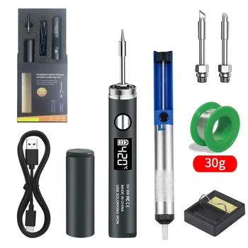

Discover the Portable lefavor USB Soldering Iron: Your Essential Mobile Repair Companion
In today's fast-paced world, the need for portable, efficient, and reliable tools is paramount. For anyone involved in electronics repair, welding, or intricate DIY projects, a compact soldering solution that can travel with you is invaluable. The lefavor USB Soldering Iron, operating at 5V 8W and equipped with a lithium battery, is designed to meet this exact demand. It transforms the traditional soldering station experience into a highly portable and user-friendly format, ensuring you're always prepared for any repair challenge.
This innovative tool offers both convenience and performance, providing a robust solution for a wide array of applications. Whether you're a professional technician needing to make quick field repairs, a hobbyist working on projects away from your main workbench, or simply someone who appreciates having a versatile tool at hand, this USB soldering iron stands ready to assist.
The Ultimate Portable Soldering Solution
The core appeal of the lefavor USB Soldering Iron lies in its exceptional portability and power. By harnessing the widespread availability of USB power and integrating a lithium battery, this device liberates you from the constraints of traditional power outlets. This means you can confidently tackle soldering tasks in virtually any location, from a remote workstation to an outdoor setting, as long as you have a charged power source or a USB port available.
Despite its compact size, this electric solder iron delivers an efficient 8W output. This power rating is more than sufficient for a multitude of soldering applications, allowing for rapid heating and effective melting of solder wire. It bridges the gap between a simple, low-power iron and a full-sized soldering station, offering a balanced blend of convenience and capability.
Key Advantages of USB Power and Lithium Battery:
- Unrestricted Mobility: Perform repairs and welding wherever you are, without needing a wall socket.
- Quick Setup: Get started on projects faster with minimal preparation.
- Reliable Power: The lithium battery ensures consistent performance during use.
- Versatile Charging: Compatible with various USB power sources, including power banks, laptops, and USB wall adapters.
Designed for Versatility and Control
The lefavor USB Soldering Iron is engineered for ease of use and adaptability, ensuring that both beginners and experienced users can achieve excellent results. Its intuitive controls and dual model options cater to different preferences and precision requirements.
Intuitive Operation
Using this portable soldering iron is straightforward, designed to get you working quickly and efficiently. To power on the device, simply perform a long press on the control button. Once active, you can then press the button once to switch between the available temperature ranges. This simple control scheme allows for quick adjustments on the fly, adapting to the specific demands of your current project without complex menus or settings.
Dual Model Options: Precision and Simplicity
Understanding that different users have different needs, lefavor offers two distinct models of this USB soldering iron:
- D510: Precision with Digital Display: For users who require exact temperature monitoring and fine-tuned control, the D510 model is an ideal choice. It features a clear digital display that shows the precise operating temperature. This model boasts an output temperature range of 200-450 degrees (Celsius, assumed) and offers impressive temperature stability of 20 degrees (Celsius, assumed). The digital readout empowers you to maintain optimal heat for delicate components and specialized solders.
- B510: Simplicity with Indicator Light: For those who prefer a more straightforward and uncomplicated experience, the B510 model is equipped with an indicator light prompt. This visual cue provides clear status updates, letting you know when the iron is powered on and its general temperature mode, making it an excellent choice for general repairs and quick fixes where extreme precision isn't the primary concern.
Compact and Robust Design
Measuring a comfortable 240mm in length, the lefavor USB Soldering Iron is designed to be highly portable without sacrificing ergonomics. Its sleek form factor allows for easy handling, even during extended use, and it fits conveniently into toolboxes, bags, or even larger pockets. This compact design makes it an indispensable tool for anyone needing to carry their soldering capabilities with them.
Key Specifications for Reliable Performance (D510 Model Focus)
The D510 model exemplifies the commitment to quality and performance found in the lefavor USB Soldering Iron series. Its specifications highlight a thoughtful design focused on safety, efficiency, and user control.
- Power and Safety: The iron operates with an input voltage of 5V, perfectly aligning with common USB power standards. It delivers an output power of 8W, ensuring sufficient heat for most soldering tasks. Importantly, it adheres to safety standards with a voltage rating of Below-75V DC, classified as Safety Extra-Low Voltage DC (SELV DC), prioritizing user safety during operation.
- Output Temperature: The D510 offers a versatile output temperature range from 200 to 450 degrees (Celsius, assumed). This broad range makes it suitable for working with various types of solder and components, from sensitive electronics to more robust connections.
- Temperature Stability: With a temperature stability of 20 degrees (Celsius, assumed), the D510 model maintains consistent heat during operation. This stability is crucial for achieving clean, strong solder joints and preventing damage to components from fluctuating temperatures.
- Certifications: The product is certified with CE and RoHS. These certifications affirm its compliance with European safety standards and restrictions on hazardous substances, underscoring its quality and environmental responsibility.
- Brand and Origin: Manufactured under the lefavor brand, the product originates from Mainland China, reflecting its global manufacturing reach.
Ideal Applications for Your USB Soldering Iron
The versatility of the lefavor USB Soldering Iron makes it suitable for a broad spectrum of applications. Its portability and precise control open up possibilities that traditional soldering tools might not offer.
- Electronics Repair: Perfect for mending small components on circuit boards, repairing gadgets, or fixing wiring in various electronic devices.
- Hobbyist Projects: An excellent tool for model making, robotics, drone assembly, or any creative endeavor requiring precise connections.
- Field Repairs: Indispensable for technicians and engineers who need to perform repairs on-site or in environments without immediate access to power outlets.
- DIY Tasks: From fixing household appliances to crafting custom wiring, this iron makes various do-it-yourself projects more manageable.
- Educational Use: A safe and easy-to-use option for students and beginners learning the fundamentals of soldering and electronics.
- Anywhere an Outlet Isn't Available: Its battery power and USB charging capability make it the ideal choice for camping, automotive work, or remote locations.
What Makes This Tool Essential?
The lefavor USB Soldering Iron stands out as an essential tool due to a combination of features that address the modern user's needs:
- Exceptional Portability: The lithium battery and USB charging make it truly mobile, allowing you to work anywhere.
- Efficient Performance: 8W output ensures quick heating and effective soldering for various tasks.
- User-Friendly Operation: Simple long press to power on and single press to switch temperatures makes it accessible to all skill levels.
- Versatile Model Options: Choose between the D510 with a digital display for precision or the B510 with an indicator light for simplicity.
- Assured Safety and Quality: Below-75V DC (SELV DC) rating, coupled with CE and RoHS certifications, provides peace of mind regarding safety and environmental standards.
- Compact Dimensions: At 240mm, it’s easy to handle, store, and transport, making it a convenient addition to any toolkit.
Getting Started with Your New Soldering Iron
Beginning your soldering projects with the lefavor USB Soldering Iron is designed to be as straightforward as possible. Upon receiving your new tool, ensure it is adequately charged via its USB input. The convenience of USB charging means you can use a standard USB power adapter, a computer port, or even a portable power bank to prepare your iron for use.
Once charged, simply perform a long press on the power button to activate the device. For the D510 model, the digital display will illuminate, showing the current temperature setting. For the B510, the indicator light will provide visual confirmation. You can then press the button once to cycle through the available temperature settings, selecting the optimal heat for your specific solder and components. The inclusion of solder wire in the product offering ensures you have everything needed to begin your repair or welding tasks right away.
Choosing the Right Model: D510 or B510?
Deciding between the D510 and B510 models largely depends on your specific soldering requirements and personal preference. If your work frequently involves delicate electronics, requires adherence to precise temperature guidelines, or if you simply prefer knowing the exact heat setting, the D510 with its digital display and explicit temperature range of 200-450 degrees (Celsius, assumed) and stability of 20 degrees (Celsius, assumed) will be the superior choice. Its digital readout offers an added layer of control and feedback.
Conversely, if your projects are more general in nature, or if you value simplicity and quick operation over precise numerical temperature displays, the B510 with its indicator light prompt will serve you exceptionally well. It offers the same core portable 5V 8W performance and lithium battery convenience, but in a more streamlined package. Both models provide the quality and reliability expected from lefavor, ensuring a valuable addition to your toolkit.
Conclusion
The lefavor Portable USB Soldering Iron (5V 8W) with a lithium battery represents a significant advancement in portable repair and welding tools. Its thoughtful design, incorporating both portability and efficient power, makes it an indispensable asset for a diverse range of users. With the choice between the precision-focused D510 digital display model and the user-friendly B510 indicator light model, lefavor offers a tailored solution for every need. Its compact 240mm dimensions, intuitive operation, and CE/RoHS certifications underscore its commitment to quality and convenience.
Empower your repair work with a tool that goes wherever you go, providing reliable performance and precise control whenever and wherever it's needed. Embrace the future of portable soldering with lefavor.